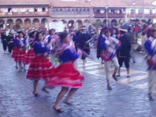
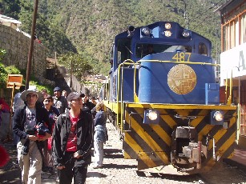
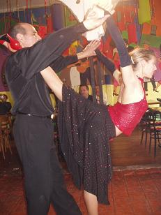
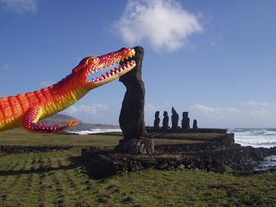

Made it to Peru! Flew with Lan Chile which was surprisingly the best plane we've been on so far, with video games and films that you can choose and watch anytime. My biggest fear of getting ripped off in the taxi came true though. After negotiating a $10 fare (at 1am), the taxi driver atrated demanding $10 for each of us. We refused, so he stopped the car somewhere agreed to pay an extra $5 - bearing in mind this trip normally costs 15 soles (about $3): welcome to Lima. The first hostel we stayed in was a functional affair, with some dodgy eletrical wiring wrapped around the shower.
Lima is a dirty, polluted city with not much to offer. It's very cloudy at the moment (and remains so for half the year) so looks pretty grim. We visited the Gold museum, but a lot of their exhibits have been stolen in recent years, so there wasn't too much to see. We moved to a much nicer hostel, to one called 'Malka' which was a lot better and had a table tennis table (woohoo!).
We've made some friends to travel with:Laura (UK), Steph and Val (Belgium), and Eduardo (Chile).
We couldn't wait to get out of Lima, so we took a bus to Pisco. This is famous for Islas Ballestas, which are full of bird shit, so we had to take a boat tour of that (lovely!). There are sealions and dolphins, as well as numerous species of seabirds, including Humboldt Penguins.
We found a cheap hotel in Pisco. Helen and I shared a room with Eduardo and the girls had their own room. Whilst down at the seafront, Eduardo went to 'make a phone call'. After he'd been gone for an hour, we started to worry. At first we thought he might be in trouble, but then we started to worry about our stuff. Slightly panicked, we fast tracked back to the hotel and asked if he'd had returned. The receptionist said he'd been back half an hour ago so we dashed back to unlock our room and check our stuff. His things were gone, and he had mysteriously disappeared! We have no explanation - perhaps he got bored with us. The worst part of the moment was the dash from reception to unlock the door of our room-we thought the worst.
What an amazing place! We caught a bus from Pisco to Ica and a short taxi ride to Huacachina. It's in the middle of the desert and is a village surrounding an oasis. The big reason we came here is to go Sandboarding. We've found a great hostel with an outside bar, barbecues and hammocks. The best thing is, there's a huge dune right out the back! Late one full moonlit night, and after several beers, I talked Helen into climbing the dune. The sand reflected silver from the moon and you could see the limits of the village from where we got to. We didn't quite make it to the top as it was exhausting, three steps up and one step sliding back down.
The next day we went on a sandboarding tour. The best bit was riding in the dune buggies.
These were open top, engine exposed, mad vehicles with about 8 of us in that literally drove straight up and down the dunes making the whole experience like a rollercoaster. They drove us to the top of dunes and we attempted to glide down them.
There were no serious casualties though I got completely sandblasted.
I was sad to leave this oasis as it is a bit of a hippy joint and everyone there was really friendly.
We found a cool alternative to getting the bus to our next destination, there are lots of huge, old American cars that, once they have the quota of 6 people on board, will take you to your destination. And that's how we got to Nazca, I (Sam) sat in the front next to someone's wife whilst four girls were wedged in the back.
Wow! El cheapo! Breakfast costs around £1, but you can get a fixed menu dinner for 50p. I got a groovy, colourful hat for £1.50, and Helen got an Alpaca wool jumper for £4.20 (we haggled over the last 50p - how cheap are we?). Hotel rooms are fairly basic but comfortable and clean at around £1.50 - £3 per person per night!
Bargain city!
Random photo of pool tables in the street!
Well this has to be done doesn't it? Ever since the aliens created these huge lines representing animals and landing strips in the desert that can only be seen from a flying object. The town itself doesn't have much to offer but we got a cheap 3 seat Cessna (have I spelt it right Rob?) to fly over the lines.
This was almost a puke inducing experience as the plane banks left and right to show the lines out of the windows to those of us sat on opposite sides of the plane. It also doesn't help as the pilot often let go of the controls to turn around to us and show us a map of the area. We went to one of the many Nazca lines lectures in the evening, this one was run by an Austrian lady in a small tin hut which was her house. The floor was compacted dirt and we sat on sacks of (dirt?). It was more like going to visit a shaman than going to a lecture. Anyway, the outcome is that no-one believes in the aliens, and the lines are made by the natives to point to water sources, line up solstice and equinox points, and appease the gods. They remind me of the ley-lines we have in the UK.
The backpacker trail started to dawn on us at this point, as we keep seeing the same people. Sometimes we say 'hi', and other times we recognise each other but pretend we haven't noticed. This trail can be a little annoying sometimes. Noticed these five irritating girls (complete with perfect hair and full make-up) on our boat to 'bird shit island' in Pisco, then in Huacachina we woke in the morning to book an early dune-buggy/sandboard excursion to find the last five places were taken by these same girls. This is when we started our hate campaign. A few days later, in Nazca, whilst waiting for our plane ride (we'd got up at 5am to ensure we got an early flight), we were engrossed in the pre-flight video (very interesting thanks to the BBC), when this bloody racket disturbed our watching. These same girls arrived an hour after everyone else, and then, guess what? Yep, they got a plane ride before us!
To hail a taxi: walk down the street.
To agree a fare: just offer something, they'll probably take it.
If they don't take it, get in the one that's waiting for you behind the one you're haggling with.
How many people can get in a Peruvian taxi: how many are you?
How many bags can you fit in: about as many as a 747 can carry, half in the boot, half on the roof, any more on laps, not forgetting the ones you're sitting on.
When to honk your horn: every metre, or 5 seconds if stuck in traffic, everytime you pass another car, when approaching other cars, when approaching a junction, with each revolution of the wheel, at every crack in the road.
What to do if your horn doesn't work: scrap your car.
How to drive: when approaching a queue of traffic, simply drive up the wrong side of the road (remember to honk at oncoming cars). When approaching a junction, don't stop, simply keep going (remember to honk), everyone else will theoretically stop (note the word 'theoretical'). When crossing a main road, don't stop, don't hesitate, just plough right through (remember to honk) and pray that others will stop.
Arequipa is known as the 'White City', and is the most beautiful town we've been to in Peru. On the way here, we were greeted by views of green fields and sparkling streams, overlooked by high, snow-capped mountains.
We visited the convent of Santa Catalina. This is a 500 year old Dominican nunnery in the heart of the city, with a very interesting history. Until 1871, the nuns here (rich men's daugthers) were able to keep slaves and servants, had their own homes and kitchens, the best food, and even held parties. More like St Trinian's than Saint Catherine! It is now a delightful, peaceful place, still home to about 30 nuns (no parties), with high walls which block out the clamour of honking taxis, and provides a perfect place to relax and recuperate.
They say that travel gives you the opportunity to broaden your experiences and try new things, so we took a chance to do something totally alien to us: we went to (sorry dad) a football match! Not just any match though, this was Paraguay vs. Costa Rica, followed by Chile vs. Brasil playing in the Copa America (South America cup). It cost us a whopping 15 Peruvian soles (about £2) for both games.
I like being here, it's a little out of the way, and you find yourself giving a little nod of appreciation to any other white people you see here, as if to say 'You made it too eh? Well done'.
I (Sam) had the most bizarre meal here. Being a little homesick for 'proper' food, I ordered soya sausages and mash in a veggie restaurant. In fact, my idea was so cool that two of the other girls ordered it also. What arrived can only be described as a bowl of watery potato soup with a side plate of solid, burnt soya nuggets that threatened to kidnap my fillings.
We took a short excursion from Arequipa to Colca Canyon. This is said to be the deepest canyon in the world, but Sam and I did not get to see it as we were suffering from Inca's Revenge! We stayed in a beautiful town called Chivay, high up in the mountains. However, getting there was quite an adventure: the bus leaves Arequipa on a normal paved road, but about half way there suddenly, and with a great jolt, becomes a very, very bumpy track (not good for an upset stomach!). This continues for about 30 hours (or so it felt) until you are greeted by a view of the town, and a blessed opportunity to get off the bus!
Sam's new hat, just to impress Jon!
Puno, high in the mountains, in the east of Peru, is a jumping off place for travel to the islands of Lake Titicaca. Our hostel was blessed with almost warm water, they christened it 'luckwarm'!
We took a 2 day trip, first stopping on the floating islands of Uros. These islands are made of the local tortuga reeds, and can be up to 6 feet thick. Fortunately, the island we landed on seemed to be quite well made, so we did not put our feet right through!
We continued to the isle of Amantani, which was to be our home for the night. Here we stayed with a local family, who seemed to have children hiding around every corner (I'm still not sure how many children there were altogether!). In the afternoon we climbed Pachatata, a hill with a shrine on top dedicated to Father Earth. The top of the hill is 4,200m above sea level, so the altitude sickness was really affecting us (I thought my head might explode).
We ate with the family in their tiny, smoke-filled kitchen, complete with guinea pig running around underneath our seats! (Sam says:it reminded me of Yoda's hovel in 'Return of the Jedi') After the evening meal, we went upstairs to rest, and without electricity, soon found ourselves nodding off. Suddenly, with no warning, our hosts burst into our room clutching armfuls of the local dress. We jumped to our feet and were being dressed before we knew it. Sam had a thick poncho and knitted hat to wear, while I had two skirts, a blouse, a very tight belt (remember, I was having trouble breathing from lack of oxygen anyway) and a thick, embroidered shawl. The clothes were beautiful, but when placed over 5 layers of clothing (it was freezing cold there), I felt like the Michelin man! After we were dressed, we were whisked away to the local nightspot (read village hall) to dance the night away to traditional Peruvian music. The local style of dancing involves facing your partner (but refraining from any eye contact whatsoever) and dancing backwards and forwards, or sometimes side to side, until the music stops (approximately 1 hour per song). Coupled with a punding headache and an inability to breathe, this was not the most pleasant experience of my life, but was certainly an experience!

This is a crazy place, known locally as the party island. All the blokes wear knitted hats and spend the ENTIRE day knitting more woolly hats. A red and white hat means he is single and a straight red hat signifies he is married. The girls wear bright dresses if they're in a good mood, and something different if they're not. I saw a building site (building a new building in the plaza), and even the builders were knitting hats in-between carrying bits of wood.
We left Puno in somewhat of a hurry, as the entire country was being brought to a standstill by a national transport strike (apparently this happens about once a month), so we took an overnight bus to Cusco. The bus is described as being 'semi-cam' which is supposed to mean it has semi-beds, but in reality means that the seat reclines a bit. We arrived to Cusco at 3am, fortunately the bus company allows passengers to remain on board until dawn. We went to our hostel in Cusco, which had promised hot showers, but failed to deliver, so we had yet another shivering trickle of water to wash under! We soon changed to a much nicer hostel with magnificent views of the Plaza de Armas.
Cusco is a great place, full of tourists using it as a base to get to Machu Picchu and the Manu jungle. It's really pretty, has great nightlife, loads to do - so good, we spent almost 2 weeks here! The Plaza de Armas is the hub of gringo activity, so many locals use it as a kind of free marketplace. Every second person is trying to sell you something, waving finger puppets in your face or flipping through piles of postcards. All this is prohibited by the Tourist Police, who keep a watchful eye on proceedings, and blow their whistles menacingly at touts! Whilst hanging around one day, we were approached by a Señora in traditional dress, who surreptitiously produced a doll from underneath her jumper, like it was some sort of illegal substance! Needless to say, we didn't buy it!
Whilst we were here, there seemed to be many parades and processions happening, although no-one really seemed to know why! We loved watching the people in colourful traditional costumes, dancing around the Plaza.


How lazy are we? We took the train! It was a magnificent ride along the Inca trail and we caught glimpses of weary hikers along the way. We stayed at Aguas Calientes (Hot Springs) and allowed ourselves a soak in the hot baths.

Our first hike around the ruins involved our guide taking us through Machu and up to Huayna Picchu. This was a terrifying climb across a high, narrow saddle and up a ridiculously steep path to a height of 4000 metres. We had a brief lunch before descending the other side to the old Inca temple of the moon. The path was even more terrifying, with steep sloping steps where you had to hold on to a rope for dear life, and climb down old, broken ladders with rungs missing. The temple was worth it though and we were the only people there (probably the first to brave it since the Incas died out). Unfortunately, we then had to climb back up the mountain to return to Machu Picchu. This was the most difficult, exhausting hike we've ever done.
Manu is an area of almost virgin jungle in the south eastern part of Peru. We took a five day excursion there, which began with the most horrific drive along dirt tracks, only wide enough for one vehicle, clinging to the edge of the mountains, with vertical drops to the oh-so-distant valley floor below. The journey was punctuated by being stopped by the traffic police, who wanted to see our passports (which were safe in Cusco), and would only let us pass after a hefty bribe was proffered by the driver. We arrived safely in Pilcopata, after passing a place where a car had plunged into the valley just a week earlier. Sam was interested in looking down at it, I refrained from fear!

On the second day, we took a trip on the river, sailing several hours downstream, stopping at natural hotsprings carved into the rock, surrounded by tropical plants and trees, and populated by enormous blue butterflies. We ate lunch on the river bank, sitting at a picnic table like a Lord and Lady from the early days of the Empire.
Further downstream, we arrived at our campsite, a small clearing in the thick of the jungle. We pitched tents, then went off to explore, like Indiana Jones. We discovered giant trees with leaves as big as us. At night we went for a hike with our guide, who showed us tarantulas and black widow spiders, on the very trees we had stood by earlier!
The next day we went hiking again. We visited our guide's parents' house, and ate bananas and drank fresh coconut milk. Later, we were shown how to get clean drinking water from bamboo stalks and how to harvest hearts of palm from the very tops of young palm trees (delicious). We ate lunch sitting in the shade of tropical plants, using giant leaves for seats. We had to make some river crossings during our hike in extremely unstable dugout canoes, propelled only by punting across the rain-swollen current.
The jungle is full of wildlife, and we were lucky enough to encounter some of it. We saw parrots and macaws flying overhead, and crossed a jungle motorway - the track laid down by leafcutter ants. We also saw a tame spider monkey and had a coati mundi climbing on us. We were also very fortunate to spot a capybara swimming across the river in front of our boat.

We arrived in Buenos Aires (BsAs) after many delays and setbacks, and headed straight for Dorrego Square. This place is famous for Tango! You can see it everywhere in the streets, and in bars and cafes. On Sundays this place comes alive with street performance and a craft market. The Tango is an amazing, flirtatious dance of fast moving feet and impressive drops. Naturally, we had a go, taking advantage of the free lessons on offer in the place where we had lunch.

We spent one afternoon exploring the cemetery at Recoleta. Sounds morbid, we know, but this is the most incredible place. It is the final resting place of the mortal remains of BsAs' rich and famous (including lots of ex-presidents and Evita). Extravagent mausoleums, big enough to house whole families of coffins, are elaborately decorated with wonderfully carved statuary. Some of the tombs were decrepit, with coffins peeking out from holes in the walls, whilst others were open for cleaning - we could have popped in to say hello! We felt a strange combination of fear and fascination.
We decided to spend one evening being cultural, so bought tickets to see Luis Salinas, a famous Argentinian guitarist, at the Teatro Colon. We expected fast paced, Spanish-style guitar music, but we found slow, irritating, tuneless lounge music. When the audience started singing along (like someone's granny who hums along to the radio, even though she doesn't know the words or the tune), we decided we'd had enough culture, so escaped to the city centre for ice-cream and video games!
BsAs is a really nice city, but we stagnated a bit there, so we headed off to Iguazu, to see the famous waterfalls.Puerto Iguazu lies on the border of three countries: Argentina, Brasil and Paraguay. Two rivers meet at right angles, conveniently forming the borders, so all three countries can be seen from the river banks. Some way upstream on the Rio Parana are the Iguazu Falls, possibly the most impressive waterfalls on Earth. The river narrows from 4km to just 80m wide, forcing the sluggish waters over a cliff edge in a powerful torrent. The falls can be seen from both Brasil and Argentina, so we set off to view them from the Brasilian side first. The panorama reveals itself slowly as you walk along the river bank, first a little coming into view, then more and more, until the highlight of the show: the Devil's Throat. This is a horseshoe shaped cascade of incredible power, thousands of tons of water gushing over it every second, leaving you in awe.

We set off to the Argentinian side early the next day, which was fortunate for us. The falls can be seen from close up from this side - close enough to feel the spray and touch the rainbows. We took a boat ride right under the falls. We'd been forewarned about how wet this really gets so Sam just wore swimwear, while I took a change of clothes. What we weren´t prepared for was the cold shock. It was like getting into a cold shower, pouring thousands of tons of water from a great height. We also took a slow boat ride along the top of the falls, gently drifting downstream - you'd never know that just metres away are the most powerful falls on earth.
It was a day for amazing sights. Later, we were on a public bus going through an estate. Some young kids were bareback riding horses and galloping across the road, riding in-front of the bus at an incredible speed.
We stayed in a gorgeous hostel called 'Hostel-Inn'.
I met a guy in a cafe who offered to sculpt my face for $5. I couldn't refuse as he got his clay out there and then. 15 minutes later, he was shoving it into my view asking "Do you like your face?". Well, here it is for you to see the resemblence, I left it in the garden in the Hostel-Inn. (H says: I don't think it looks anything like him - tell us what you think!).
After a few days spent lounging around enjoying the sunshine, we took a 22 hour bus ride to Rio. The seats were supposed to recline to become beds, but this is only if your bed is upright against the wall!
This is the city that's famous for it's huge Christ figure looking over it from a nearby mountain-top. It's also got Copacabana beach (maybe the one Barry Manilow was singing about-I'm not sure-not a fan). It is also looked over by a mountain called ´The Sugar Loaf´ (no idea why). (H says: the cloud that often covers the top of the hill makes it resemble a local loaf of bread which is topped in sugar).
I took the cable-car up the Sugar Loaf whilst Helen rock climbed up. I met her at the top (I had to pay to go up) whilst cheap-skate Helen got up for free. She got some funny looks when she climbed over the safety fence at the top armed with rope and a harness.
H interrupts: the climb was about 400m, and took us about 4 hours (instructor plus me and a French guy called Mathias). We stopped often to enjoy the view and have sandwiches! It was a fairly easy climb on granite (prob a v diff/severe), but the distance meant my feet were killing me by the top (oh, I love rock boots!).
I climbed this! You can see more pictures if you follow this link!
The beaches are great, and so warm for winter. The sea is really violent though, and no-one can go out more than a few metres as the waves knock you off your feet, cauising nasty sand burns. Vendors continuously parade up and down the beach selling all sorts. We even saw a guy carrying a mini-barbecue and offering to fry you cheese on the spot. My favourite was the coconuts. You ask for one and this guy produces a coconut and a machete, hacks three times, sticks a staw in and you have cool, fresh coconut milk - lovely.
Jesus. Well, this guy has to be seen. It took us a bus ride and a funicular railway to get most of the way. What amazed us, though, were the escalators at the top to take you 'to Jesus'. Talk about stairway to heaven! The Christ figure was humbling, it's the largest Art Deco statue in the world. We were gazing at the figure when we saw a white dove come out of nowhere, circle Christ a couple of times, then disappear behind him. We'd never seen a white dove in South America before, and there was no sign of it behind the statue. No-one else seemed to notice it. A sign?
Before we left Rio, we met someone who thought Santiago was a terrible city, and Sam was considering delaying our flight there. It was a good job he didn't - it's a lovely city, surrounded by snow-capped mountains which appear to be floating around the city (admittedly, that's due to all the pollution!).
As usual we started out in a fairly naff hostel, before finding somewhere nice called the Bellavista, really friendly. We made friends with Leela and Tim, who are from the Isle of Wight (see them at this link).
In Santiago, we did very little - walked in the city, watched street theatre, visited the art museum. We tried to visit an interactive museum in the suburbs, but when we got there the man at the gate told us it didn't open until 2pm. As it was 1.15, we decided to wait (with an ice-cream) then headed back. But then he told us the museum was closed until the next day: foiled!
One of the most amazing sights from Santiago was seeing hundreds of people crowding the pedestrian shopping street to watch the Olympic tennis finals on a massive TV there!
We did manage to venture out of Santiago for a day, to the nearby seaside town of Valparaiso, which people we had met and the Lonely Planet describe as a lovely town. We imagined a pretty beach, with sparkling sands and plenty to do, so we dragged Tim and Leela away from the city streets (don't ask what they were doing there!) to explore the countryside. Sadly, we found a dirty port and not much to do except ride on the funicular railways - quite possibly the scariest contraption ever created! See the fear on our faces!
However, the time soon came for us to leave Santiago for Easter Island, also known as Isla de Pascua or Rapa Nui. A six hour flight brought us to one of the most remote places in the world - 4000km from anywhere! Despite being part of Chile, it's more Polynesian in flavour, with new arrivals being greeted with lei. It's a tropical island, so we expected hot weather - unfortunately all we got was tropical rain and howling winds!
Despite the weather, we had a fantastic time. We hired a 4x4 on the first day and Sam drove us all (round the bend!?) round the island looking at Moai, the giant carved stone heads that cover the island. Most are fallen, pushed over during tribal wars, and lie face down in the soil. Many are broken, their red 'top-knots' have rolled further downhill. Some have been restored to their standing position, on long platforms called 'ahu'. They range between 2 and 10m in height and can be quite imposing.

Sadly, we only had 2 full days on the island, but it was fantastic, and a wonderful place to end our time in South America.